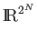

A quantum memory register is just a state machine whose state transitions are defined by the operators we apply. A reversible deterministic state machine with 2N states can be modeled by an N-bit register and operators which are 2N x 2N permutation matrices. A classical probabilistic state machine can be modeled in a similar manner, as an N-bit register with a normalized state vector in  and operators that are doubly stochastic matrices. The difference between the quantum computer and the probabilistic computer is that the projection of the quantum state vector onto any eigenstate is a complex number: it has both a magnitude and a phase. The classical probabilistic state vector's projection onto its eigenstates has only a positive real magnitude. The amplitude of the quantum state vector allows for operators which cause wave-like interference of the eigenstates, enforcing correct solutions and diminishing incorrect ones [11].
A quantum algorithm is described by an initial normalized state and a sequence of unitary matrices representing linear transformations of the state vector. These unitary matrices should increase the probability that the state vector collapses into a correct solution state when measured.